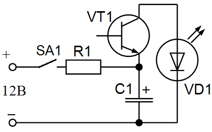

Светодиодная мигалка на транзисторе
Рассматриваемая схема хоть и отличается простотой, однако, она позволяет наглядно увидеть лавинный пробой транзистора, а также работу электролитического конденсатора. В том числе, путем подбора емкости можно легко изменять частоту мигания светодиода. Экспериментировать также можно с входным напряжением (в небольших диапазонах), которое тоже влияет на работу изделия.
В первой фазе цикла транзистор «закрыт», то есть не пропускает ток из источника питания. Соответственно, светодиод не светится.
Конденсатор расположен в цепи до закрытого транзистора, потому накапливает электрическую энергию. Происходит это до тех пор, пока напряжение на его выводах не достигнет показателя, достаточного для обеспечения так называемого лавинного пробоя.
Во второй фазе цикла накопленная в конденсаторе энергия «пробивает» транзистор, и ток проходит через светодиод. Он вспыхивает на короткое время, а затем опять гаснет, так как транзистор опять закрывается.
Далее мигалка работает в циклическом режиме и все процессы повторяются.

Рис. 1 - Схема светодиодной мигалки на транзисторе
Таблица 1
| Обозначение | Наименование | Номинал | Количество | Примечание |
|---|---|---|---|---|
| C1 | Конденсатор электролитический | 470 мкФ/16В | 2 | 470-1000 мкФ на 16 В |
| R1 | Резистор | 1 кОм | 2 | |
| SA1 | Выключатель | 1 | ||
| VD1 | Светодиод | АЛ307 | 2 | |
| VT1 | Биполярный транзистор | КТ315 | 2 |
Источники:
sdelaysam-svoimirukami.ru - Светодиодная мигалка на транзисторе